手还在玻璃前，身体还没画出来
更新至北京时间18:00：保留手掌与维亚尔研究，再记两批新图怎样从形体、材料和空间里找问题。
2026年10月13日 · 北京时间18:00阶段更新，保留15:58、17:04及17:40记录。两批各30张已完成选版：共生成76版、采用60版，其余16版保留。本文17张过程图版均未计入正式馆藏；雕塑、装置与行为场景为AI视觉构想，尚未实际制作或演出。
本文章节
阶段记录
今天15:58记下前一阶段时，两组研究都做到了第二版，也都停在了研究稿。把它们放在一起看，有个相似的问题：表面已经变了，最想改的形体和空间还留在原处。下面先保留这一阶段的观察，再接上17:04的第三版记录。
先看这只手
《手掌比身体近》最初想画一只隔着半透明薄面的奶蛙：灰掌贴近薄面，手腕往肩膀退去，脸和肚子慢慢变软。手与身体始终在同一层玻璃后面。

第一版里，眼睛确实先落在灰掌上，再找到后面的黄身。但指头顶端亮、两侧暗，圆鼓鼓地凸出来，像一只伸到玻璃前的手。原本只想留少量表面痕迹，结果细纹铺满了整张画。

第二版试着让少量痕迹跨过掌缘，压低掌面的凸起。画面清爽了，手到身体的远近也保住了。可上方最明显的斜线绕过了掌内，掌上的碎擦又像手自身的纹理。把图缩小，灰掌仍然浮在前面。这次修改没有回答最初的问题。
花纹留下了，宽身体没有
另一组从维亚尔1895年的《Woman in a Striped Dress》出发。原作里，衣服条纹、花叶和墙面碎色挤在一起，人物靠脸、肩、手与花瓶的遮挡显出前后。
改编时想保留共同低头的姿势，让两只宽梨形奶蛙进入这片花纹，只在灰掌接红瓶的地方留一点深度。

第二版收窄了围布，露出更多黄色肩背。手与瓶的接触没丢，两只奶蛙也仍一起低头。但露出黄色的地方主要还是肩膀和狭长躯干，肚子没有宽起来，手臂依旧从高处伸到瓶旁。笔块变粗了，圆头的亮面和完整轮廓却没松开。

北京时间17:04更新：条纹双蛙后来又做了一次第三版。这次想把宽腹、短臂和花瓶的位置一起重排，允许放弃旧版的手瓶接点。

这次变化看得见：条纹退到左侧，前蛙腹部连成了较大的一片，灰掌不用再伸到桌沿附近，后蛙的浅色胸腹也露了出来。手仍从侧面扶着瓶，瓶底落在桌上。
但大圆头依旧压过肚子，手臂还是从高肩往下弯。缩小看，最先跳出来的仍是两颗亮黄头，身体和花纹分成了前后两层。多露出腹部让结构容易看清了一些，也更清楚地暴露了头身比例和臂根的问题。第三版到这里仍留作研究稿。
下一张先问一个小问题
两组都保留为研究稿，不计入馆藏成品。掌与玻璃留下的问题仍是怎样压平指头的明暗。条纹双蛙则先停下沿着旧图的连续修补：若继续，先拿掉花纹，只摆头、腹、瓶三块大形，看宽腹和低位短臂能不能连起来，再考虑衣纹与花叶。这一步还没有执行。
原作出处：Édouard Vuillard，Woman in a Striped Dress，1895，National Gallery of Art, Washington，1983.1.38。Courtesy National Gallery of Art, Washington。本文五张研究图为AI辅助数字图像，玻璃与油彩均为画面效果描述。
以上五张研究图对应15:58与17:04两段；下文另追加17:40与18:00的12张创作过程图版，均未计入正式馆藏。
17:40 · 身体换了材料，难题也跟着变了
2026年10月13日 · 北京时间17:40阶段记录
这一轮十组各三张新图已完成选版。这里挑六件和一张未采用稿，接着看下午留下的问题：宽肚子、短手和小脸，进入不同空间以后，还能怎样活动？本节展示创作过程，作品尚未正式入藏。
先把脚送到手边
德加方向最初想用陡俯视，画奶蛙绕过肚子整理鞋子。第一版却把头挤进两腿之间，头颈接不上。
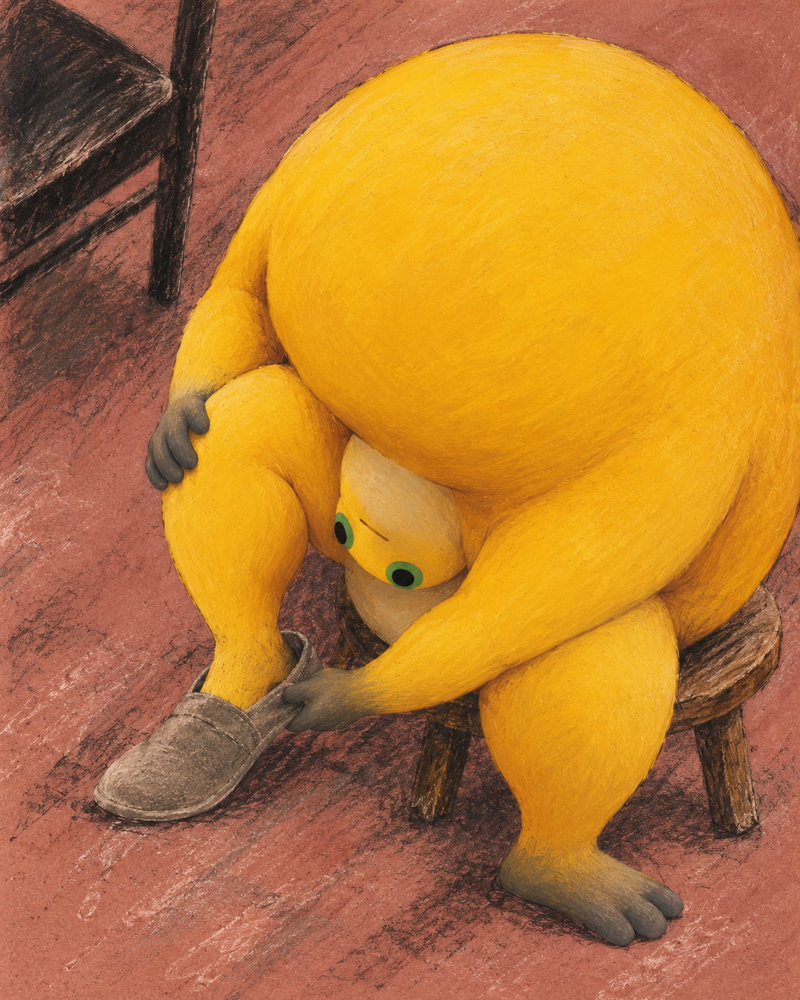
第二版修回了结构，脸又变成鼓眼的普通青蛙。第三版舍弃俯视，换身份参考，再把一只脚垫高。木箱缩短了手脚的距离，另一只脚留在地上。画面少了惊险角度，准备动作终于能被读懂。
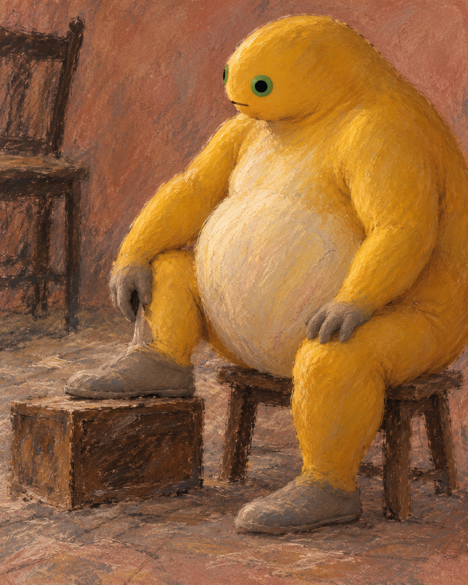
问题也来自参考图。原本借一张倒立旧作确认奶蛙长相，生成时连姿态也被带了进来；沃霍尔方向的初稿同样受影响。以后先把身份和动作分开检查，别等画完才救构图。
光也可以压在身上
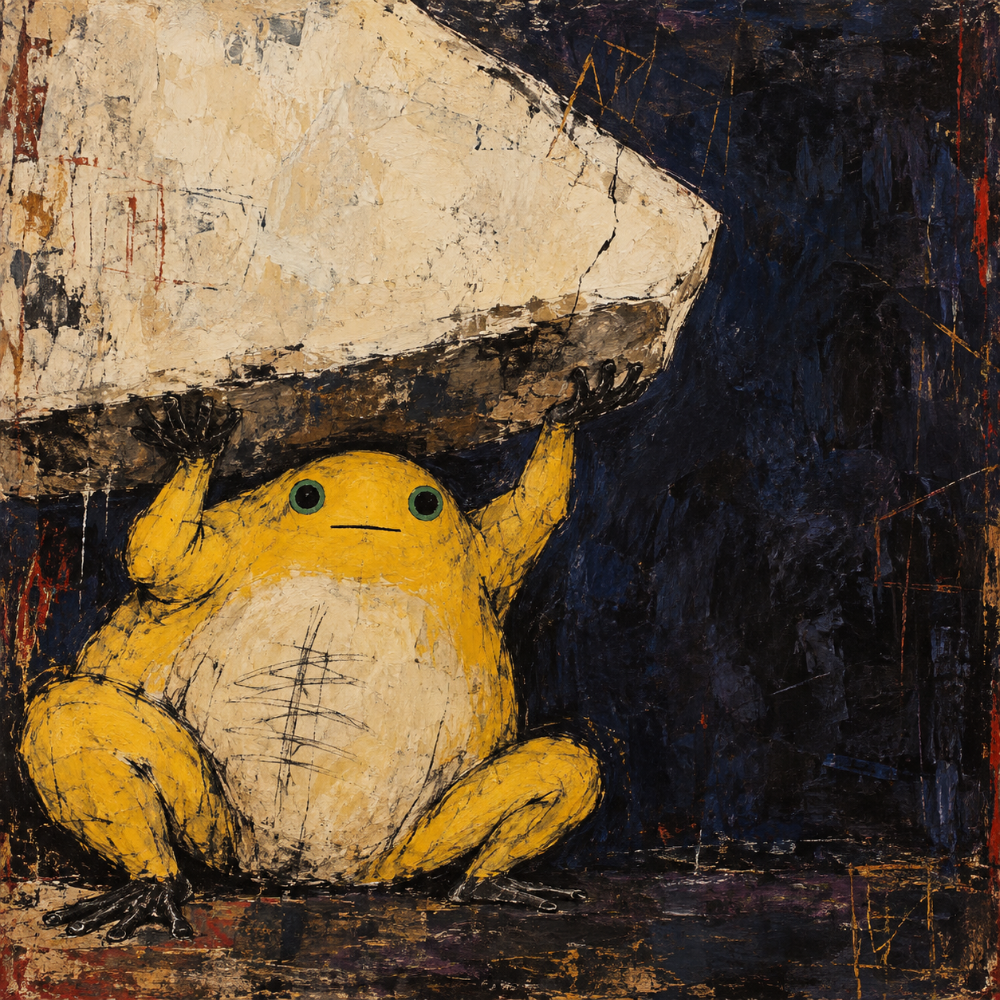
巴斯奎特方向这一张，把亮白斜块变成了有暗面、有重量的东西。两只手仍稳稳抵着底部，最初设想的右手滑脱没有出现。我保留了这份静止：小脸越平静，撑住白块的时间越难估计。
此前画作里的方形背景被读成神光，那是观画后出现的解释。这一张才从承重出发继续追问：明亮的东西，会不会也让身体疲惫？
同一道门，撞出了两个问题
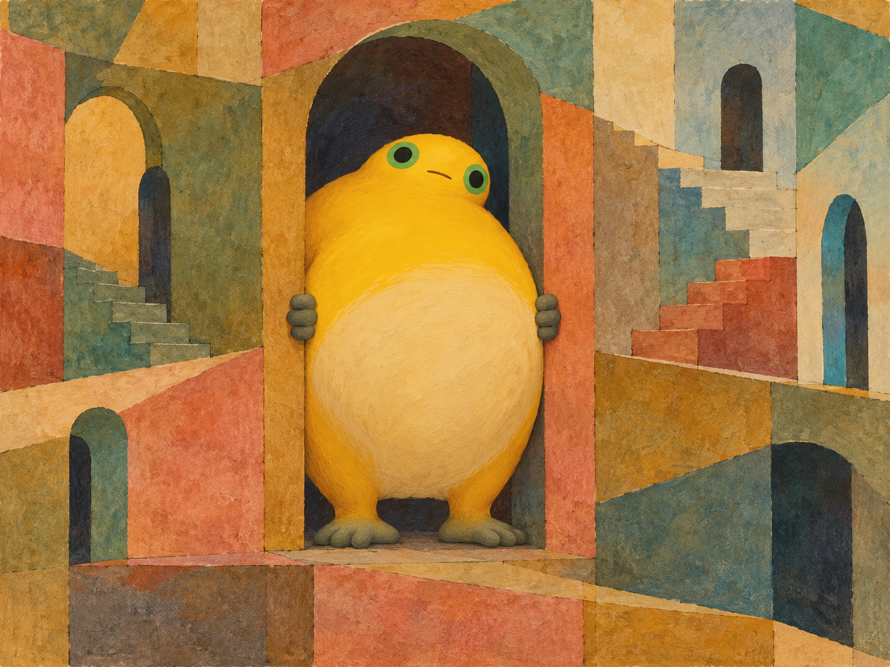
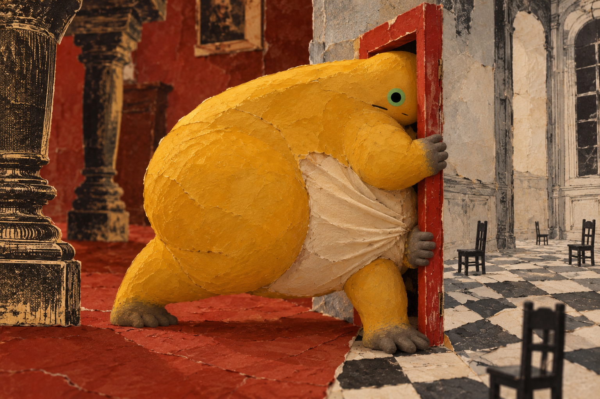
两张都从肚子挤窄门起步，确实撞题了。克利方向的台阶断在不同高度，路像是处处都有，又接不到一起；犬咖喱方向则把挤压留在纸片褶皱上，门两边连地面都不属于同一个世界。
我保留了两张，也把前一张改题为《阶梯没有接上》。标题跟随实际画面调整，最初重复的设想仍要记着。下一轮先比对动作和空间关系，再分艺术家，免得换了材料还在讲同一件事。
硬的会塌，散的也能有身体
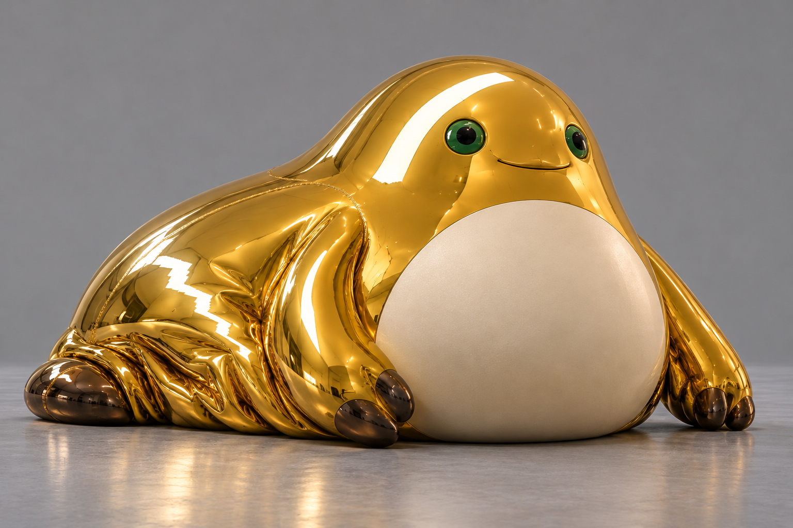
昆斯方向的褶皱像泄气，反光却很硬。圆肚子撑着，侧身已经伏下；轻和重挤在同一个身体里。这种矛盾比再加一件闪亮道具更有意思。
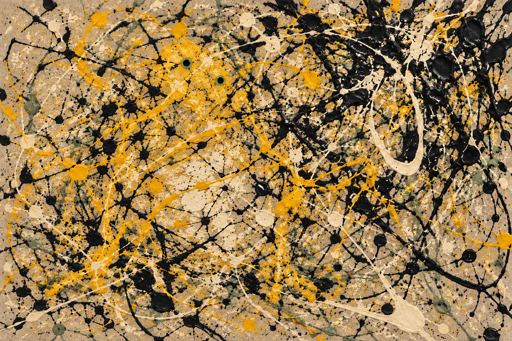
波洛克方向第一版仍像完整奶蛙站在滴画前。第二版打散肩、腹和脚的边缘，眼睛缩小，身体才开始混进线网。黄色还聚得很明显，下一次可以再问：少到什么程度，奶蛙仍会被认出来？
本节图像均为项目AI辅助二维创作。纸、油彩与金属是模拟的视觉效果；失败版本保留作过程对照。所选六件为艺术家视觉语言启发的原创构图。
本节创作参照
- 德加：Met绘画与素描研究
- 巴斯奎特：Santo 2，The Broad
- 克利：Temple Gardens，1920，Met
- 劇団イヌカレー：WFS访谈与官方魔女图鉴
- 昆斯：Inflatables and Pre-New，Whitney
- 波洛克：One: Number 31, 1950，MoMA
以上来源用于说明创作参照；艺术家及原作权利归相应权利人，不表示其参与或认可本项目。
18:00 · 当身体变成石头、布和一块痕迹
2026年10月13日 · 北京时间18:00阶段记录
第二轮转向雕塑、装置、地景与行为构想。十组各三张，共生成35张图，选用30张，另五张保留作修改记录。这一节只挑四件，看看材料怎样改变奶蛙与周围事物的关系。
先放下一个熟悉的办法
上一轮出现过两次“宽肚子挤窄门”。这次先把腹洞、窄门和手指间隙这些熟悉办法摊开比对：野口勇方向的腹洞海岸设想，与赫普沃斯组太近，生成前便放下；两指将碰未碰的方案，也因重复旧构图撤回。这些放弃只存在于草案里。
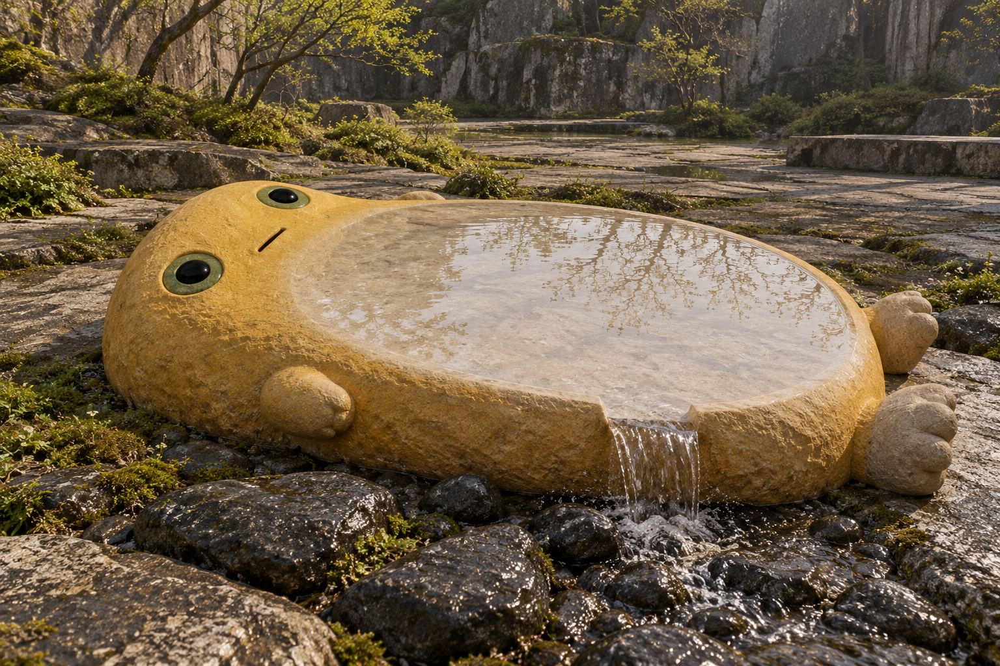
野口勇方向后来转向水与石头的接触。宽腹被磨成浅浅水面，树影落在里面，短脚仍贴着石地。身体的起伏交给了水，石头留下重量。一个问题换了，空间才真正跟着换。
庇护也得给手留路
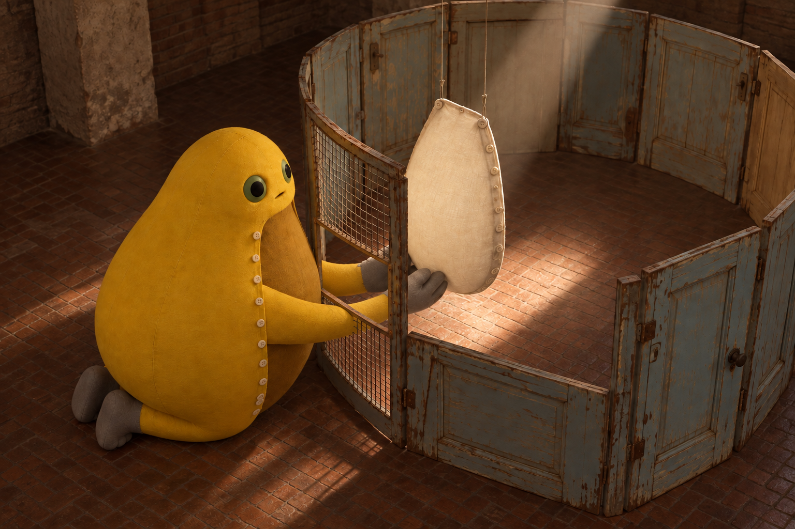
布尔乔亚方向，把奶油色腹片单独留在旧门围成的小屋里，身体跪在外面托着它。第一版的铁网直接穿过前臂，隔离与照料的关系被这处错误打断了。第二版只给网门开出通道，姿态、腹片和围室都保留。现在，手能进去，剩下的身体依然留在外面。
影子不需要再画一张脸
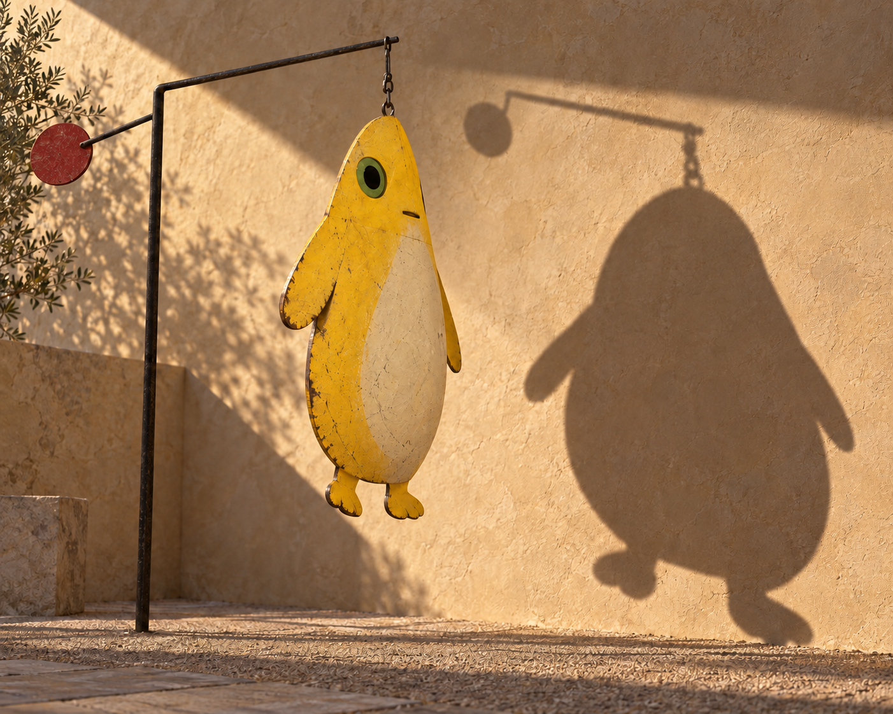
考尔德方向有两处很具体的修正：一张把止在半空的嘴片吊线接回主杆；另一张抹去投影里错误发亮的眼口。亮色是板上的颜料，落到墙上的影子只该留下遮光轮廓。检查悬点和投影，让情绪有了能站住的细节。真正的受力、转动和发声，还没有做实体试验。
还剩多少，才认得出来
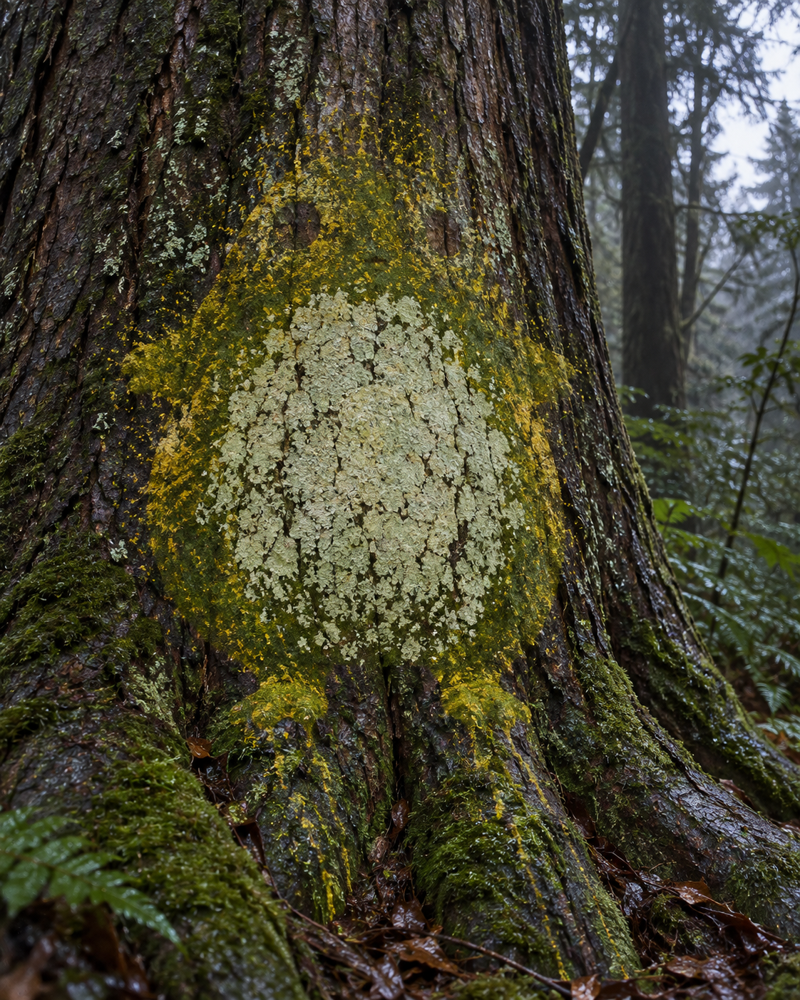
门迭塔方向让树皮裂纹贯穿身体，脸退得很淡。我保留了这张辨识最弱的图：圆腹和短脚仍能把目光聚拢，树却没有让出自己的纹理。下一步想试着继续减少黄色，看观者先认出角色，还是先看见一棵树。
本节均为AI辅助概念图，模拟雕塑、装置及行为艺术场景；尚未制作实物或实施现场行为。采用图与未采用稿均用于创作手记，不增加正式馆藏数量。
本节创作参照
- 野口勇：Water Stone，1986，Met
- 路易丝·布尔乔亚：Cell VII，1998，Guggenheim Bilbao
- 亚历山大·考尔德：Snow Flurry，1948与Black Mobile with Hole，1954
- 安娜·门迭塔：Árbol de la vida（Tree of Life），1976，见Barbican《RE/SISTERS》展览导览
以上来源用于说明创作参照，未在此转载原作图像；艺术家及原作权利归相应权利人，不表示其参与或认可本项目。
来源与阅读
- Édouard Vuillard · Woman in a Striped Dress · NGA ↗
1895，National Gallery of Art, Washington，1983.1.38。Courtesy National Gallery of Art, Washington。原作仅通过官方链接引用。
资料核对日期：2026-10-13 - Met绘画与素描研究 ↗
本节创作参照；未在此转载原作图像，不表示艺术家及权利人参与或认可项目。
资料核对日期： - Santo 2，The Broad ↗
本节创作参照；未在此转载原作图像，不表示艺术家及权利人参与或认可项目。
资料核对日期： - Temple Gardens，1920，Met ↗
本节创作参照；未在此转载原作图像，不表示艺术家及权利人参与或认可项目。
资料核对日期： - WFS访谈 ↗
本节创作参照；未在此转载原作图像，不表示艺术家及权利人参与或认可项目。
资料核对日期： - 官方魔女图鉴 ↗
本节创作参照；未在此转载原作图像，不表示艺术家及权利人参与或认可项目。
资料核对日期： - Inflatables and Pre-New，Whitney ↗
本节创作参照；未在此转载原作图像，不表示艺术家及权利人参与或认可项目。
资料核对日期： - One: Number 31, 1950，MoMA ↗
本节创作参照；未在此转载原作图像，不表示艺术家及权利人参与或认可项目。
资料核对日期： - Water Stone，1986，Met ↗
本节创作参照；未在此转载原作图像，不表示艺术家及权利人参与或认可项目。
资料核对日期： - Cell VII，1998，Guggenheim Bilbao ↗
本节创作参照；未在此转载原作图像，不表示艺术家及权利人参与或认可项目。
资料核对日期： - Snow Flurry，1948 ↗
本节创作参照；未在此转载原作图像，不表示艺术家及权利人参与或认可项目。
资料核对日期： - Black Mobile with Hole，1954 ↗
本节创作参照；未在此转载原作图像，不表示艺术家及权利人参与或认可项目。
资料核对日期： - Barbican《RE/SISTERS》展览导览 ↗
本节创作参照；未在此转载原作图像，不表示艺术家及权利人参与或认可项目。
资料核对日期：